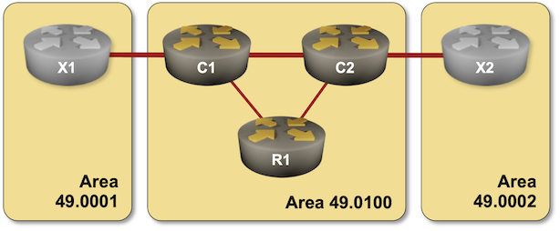

Distributing Level-2 IS-IS Routes into Level-1 Areas
By the end of the Multilevel IS-IS Deployments exercise, we saw that every time you use level-1 areas with multiple exit points towards the level-2 IS-IS backbone, you might end up with suboptimal inter-area routing.
In this exercise, you’ll solve the suboptimal routing problem for the five-router topology we used before. You’ll use the IP prefix distribution from the level-2 backbone into level-1 areas, a mechanism described in RFC 5302.

Device Requirements
Use any device supported by the netlab IS-IS configuration module that correctly implements the distribution of inter-area (level-2) routes into level-1 areas as specified in RFC 5302.
Unfortunately, this leaves FRRouting off the table. As of August 2025, FRRouting’s IS-IS implementation cannot distribute prefixes between level-1 areas and level-2 backbone.
Starting the Lab
You can start the lab on your own lab infrastructure or in GitHub Codespaces (more details):
- Change directory to
advanced/2-route-leak - Execute netlab up
- Log into lab devices with netlab connect
Existing Device Configuration
When starting the lab, netlab configures IPv4 addresses and IS-IS protocol on the lab routers, resulting in a configuration very similar to the end state of the Multilevel IS-IS Deployments lab exercise. IS-IS parameters of individual lab devices are summarized in the following table:
| Node | IS-IS Area | System ID | IS-IS type |
|---|---|---|---|
| x1 | 49.0001 | 0000.0000.0004 | level-2 |
| x2 | 49.0002 | 0000.0000.0005 | level-2 |
| r1 | 49.0100 | 0000.0000.0001 | level-1 |
| c1 | 49.0100 | 0000.0000.0002 | level-1-2 |
| c2 | 49.0100 | 0000.0000.0003 | level-1-2 |
The Problem
Let’s redo the traceroute commands we did at the end of the Multilevel IS-IS Deployments exercise:
The path from R1 to X1/X2 (as reported by Arista cEOS)
r1#traceroute 10.0.0.4
traceroute to x1 (10.0.0.4), 30 hops max, 60 byte packets
1 c1 (10.1.0.1) 0.043 ms 0.008 ms 0.007 ms
2 x1 (10.0.0.4) 1.113 ms 1.132 ms 1.396 ms
r1#traceroute 10.0.0.5
traceroute to x2 (10.0.0.5), 30 hops max, 60 byte packets
1 c1 (10.1.0.1) 0.040 ms 0.009 ms 0.007 ms
2 c2 (10.1.0.10) 0.635 ms 0.656 ms 0.863 ms
3 x2 (10.0.0.5) 2.034 ms 2.077 ms 2.205 ms
As you can see, R1 uses one of the L1/L2 routers (but not necessarily the best one) to reach X1/X2. Its routing table does not contain routes for X1/X2 loopbacks, so it has to rely on the default route to reach other areas:
IS-IS routes on R1 (running Arista EOS)
r1#show ip route isis | begin Gateway
Gateway of last resort:
I L1 0.0.0.0/0 [115/10]
via 10.1.0.1, Ethernet1
via 10.1.0.5, Ethernet2
I L1 10.0.0.2/32 [115/20]
via 10.1.0.1, Ethernet1
I L1 10.0.0.3/32 [115/20]
via 10.1.0.5, Ethernet2
I L1 10.1.0.8/30 [115/20]
via 10.1.0.1, Ethernet1
via 10.1.0.5, Ethernet2
In this lab exercise, we want to ensure R1 can reach both X1 and X2 over an optimal path1. To do that, we’ll distribute2 select level-2 routes (X1/X2 loopbacks) into the level-1 area.
Configuration Task
- On C1 and C2, leak the /32 prefixes from the L2 LSP database into L1 database.
- Check that R1 can reach X1 and X2 even if one of the R1-C1 or R1-C2 links fails.
L2 → L1 route leaking is often configured with the distribute or redistribute command somewhere in the routing process hierarchy. That command should accept a route-map (or similar) parameter that allows you to filter the L2 routes inserted into L1 LSP.
Validation
Examine the routing table on R1. It should contain the X1/X2 loopback prefixes, but not the C1-X2 or C2-X2 subnets. This is how the R1 routing table should look on Arista EOS:
R1 routing table with distributed L2 routes (as viewed on Arista cEOS)
r1#show ip route isis | begin Gateway
Gateway of last resort:
I L1 0.0.0.0/0 [115/10]
via 10.1.0.1, Ethernet1
via 10.1.0.5, Ethernet2
I L1 10.0.0.2/32 [115/20]
via 10.1.0.1, Ethernet1
I L1 10.0.0.3/32 [115/20]
via 10.1.0.5, Ethernet2
I L1 10.0.0.4/32 [115/30]
via 10.1.0.1, Ethernet1
I L1 10.0.0.5/32 [115/30]
via 10.1.0.5, Ethernet2
I L1 10.1.0.8/30 [115/20]
via 10.1.0.1, Ethernet1
via 10.1.0.5, Ethernet2
The routing table printout on Cisco IOS is even better – it shows which routes are “real” L1 routes and which ones are inter-area (ia) routes distributed into a level-1 area:
R1 routing table on Cisco IOS
r1#show ip route isis | begin Gateway
Gateway of last resort is 10.1.0.5 to network 0.0.0.0
i*L1 0.0.0.0/0 [115/10] via 10.1.0.5, 00:02:23, Ethernet0/2
[115/10] via 10.1.0.1, 00:02:23, Ethernet0/1
10.0.0.0/8 is variably subnetted, 10 subnets, 2 masks
i L1 10.0.0.2/32 [115/20] via 10.1.0.1, 00:02:26, Ethernet0/1
i L1 10.0.0.3/32 [115/20] via 10.1.0.5, 00:02:26, Ethernet0/2
i ia 10.0.0.4/32 [115/30] via 10.1.0.1, 00:00:38, Ethernet0/1
i ia 10.0.0.5/32 [115/40] via 10.1.0.1, 00:00:38, Ethernet0/1
i L1 10.1.0.8/30 [115/20] via 10.1.0.5, 00:02:26, Ethernet0/2
[115/20] via 10.1.0.1, 00:02:26, Ethernet0/1
Finally, let’s check that this solution solves the suboptimal inter-area routing challenge. R1 should reach X1 over C1 and X2 over C2.
Traceroute results on R1 running Arista EOS
r1#traceroute 10.0.0.4
traceroute to 10.0.0.4 (10.0.0.4), 30 hops max, 60 byte packets
1 c1 (10.1.0.1) 0.071 ms 0.010 ms 0.008 ms
2 x1 (10.0.0.4) 1.306 ms 1.323 ms 1.509 ms
r1#traceroute 10.0.0.5
traceroute to 10.0.0.5 (10.0.0.5), 30 hops max, 60 byte packets
1 c2 (10.1.0.5) 0.071 ms 0.007 ms 0.005 ms
2 x2 (10.0.0.5) 1.073 ms 1.085 ms 1.268 ms
Note
The default routes are still present in the R1 routing table and will be used for all other destinations outside of area 49.0100.
Behind the Scenes
In the Route Redistribution into IS-IS exercise, we mentioned how dangerous route redistribution could be, and yet we’re doing two-way redistribution within IS-IS (L1 → L2 route distribution is built into IS-IS, and now we introduced L2 → L1 route distribution).
As the last part of this exercise, let’s explore how IS-IS uses the mechanisms described in RFC 5302 to prevent redistribution loops3. Looking at the C1 level-1 LSP should give you all the hints you need:
C1 level-1 LSP (viewed on R1 running Arista cEOS). Note the Up/Down flags in Reachability TLVs
r1#show isis database detail c1.00-00
Legend:
H - hostname conflict
U - node unreachable
IS-IS Instance: Gandalf VRF: default
IS-IS Level 1 Link State Database
LSPID Seq Num Cksum Life Length IS Received LSPID Flags
c1.00-00 5 64158 1188 138 L2 0000.0000.0002.00-00 <DefaultAtt>
Remaining lifetime received: 1199 s Modified to: 1200 s
NLPID: 0xCC(IPv4)
Hostname: c1
Area addresses: 49.0100
Interface address: 10.1.0.9
Interface address: 10.1.0.1
Interface address: 10.0.0.2
IS Neighbor : r1.00 Metric: 10
IS Neighbor : c2.00 Metric: 10
Reachability : 10.0.0.4/32 Metric: 20 Type: 1 Down
Reachability : 10.0.0.5/32 Metric: 30 Type: 1 Down
Reachability : 10.1.0.8/30 Metric: 10 Type: 1 Up
Reachability : 10.1.0.0/30 Metric: 10 Type: 1 Up
Reachability : 10.0.0.2/32 Metric: 10 Type: 1 Up
Router Capabilities: Router Id: 10.0.0.2 Flags: []
Area leader priority: 250 algorithm: 0
You can’t glean the same amount of information from a Cisco IOS printout; it just claims a prefix is an IP-Interarea prefix.
C1 level-1 LSP (viewed on R1 running Cisco IOS). The prefixes with the Down bit are shown as IP-Interarea prefixes
r1#show isis database level-1 c1.00-00 detail
Tag Gandalf:
IS-IS Level-1 LSP c1.00-00
LSPID LSP Seq Num LSP Checksum LSP Holdtime/Rcvd ATT/P/OL
c1.00-00 0x00000028 0xB53E 771/1199 1/0/0
Area Address: 49.0100
NLPID: 0xCC
Hostname: c1
Metric: 10 IS-Extended r1.00
Metric: 10 IS-Extended c2.00
IP Address: 10.0.0.2
Metric: 10 IP 10.0.0.2/32
Metric: 10 IP 10.1.0.0/30
Metric: 10 IP 10.1.0.8/30
Metric: 20 IP-Interarea 10.0.0.4/32
Metric: 30 IP-Interarea 10.0.0.5/32
You did notice the Up/Down bit, right? It’s defined in RFC 5305 and RFC 5302 as the high-order bit of the default metric field in the Extended IP Reachability TLV (see Using IS-IS Metrics for more details). This is how IS-IS uses the Down bit to prevent route redistribution loops:
- After running an SPF algorithm, an L1/L2 router copies L1 routes without the Down bit into its L2 LSP (see Multilevel IS-IS Deployments for details)
- The L1 routes with the Down bit set are not copied into the L2 LSP.
- L2 routes copied into an L1 LSP are marked with the Down bit, preventing other L1/L2 routers from copying them back into their L2 LSP.
While the handling of the Down bit is trivial, there’s another detail to consider: L1 routes are preferred over L2 routes, but that should not apply to the L1 routes that were copied from L2 routes. Thus, L1 routes with the Down bit are less preferred than the L2 routes.
But wait, there’s more. In principle, IS-IS had different TLVs for internal and external routes4, and external routes could have internal and external metrics, resulting in a horrendously long list of IP prefix types and an order of preference list that’s pretty close in complexity to the BGP one (see RFC 5302 for more details).
Next: Build an SR-MPLS Network with IS-IS
Reference Information
Lab Wiring
| Origin Device | Origin Port | Destination Device | Destination Port |
|---|---|---|---|
| r1 | Ethernet1 | c1 | Ethernet1 |
| r1 | Ethernet2 | c2 | Ethernet1 |
| c1 | Ethernet2 | c2 | Ethernet2 |
| c1 | Ethernet3 | x1 | eth1 |
| c2 | Ethernet3 | x2 | eth1 |
Note
The interface names depend on the lab devices you use. The printout was generated with user routers running Arista EOS and X1/X2 running FRRouting.
Lab Addressing
| Node/Interface | IPv4 Address | IPv6 Address | Description |
|---|---|---|---|
| r1 | 10.0.0.1/32 | Loopback | |
| Ethernet1 | 10.1.0.2/30 | r1 -> c1 | |
| Ethernet2 | 10.1.0.6/30 | r1 -> c2 | |
| c1 | 10.0.0.2/32 | Loopback | |
| Ethernet1 | 10.1.0.1/30 | c1 -> r1 | |
| Ethernet2 | 10.1.0.9/30 | c1 -> c2 | |
| Ethernet3 | 10.1.0.13/30 | c1 -> x1 | |
| c2 | 10.0.0.3/32 | Loopback | |
| Ethernet1 | 10.1.0.5/30 | c2 -> r1 | |
| Ethernet2 | 10.1.0.10/30 | c2 -> c1 | |
| Ethernet3 | 10.1.0.17/30 | c2 -> x2 | |
| x1 | 10.0.0.4/32 | Loopback | |
| eth1 | 10.1.0.14/30 | x1 -> c1 | |
| x2 | 10.0.0.5/32 | Loopback | |
| eth1 | 10.1.0.18/30 | x2 -> c2 |
-
Since the metrics on all links are the same, the problem reduces to reaching X1 and X2 with a minimal number of hops. ↩
-
The terminology used in RFC 5302. Individual implementations (for example, Cisco IOS) might call this feature route leaking. ↩
-
You may accidentally come across an odd IS-IS implementation that does not implement the up/down bit. The correct solution is to change the vendor or run away. If you can’t do that, try using route tags. ↩
-
Although they are no longer used now that we use wide metrics with TLV 135. Modern IS-IS implementations should use Prefix Attribute Flags (sub-TLV 4) in TLV 135 to mark external routes (see RFC 7794 for details). ↩